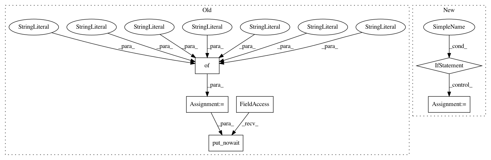

f04c2384c98e80b37ac442f5e0fb6152d4ee059e,trixi/logger/visdom/numpyvisdomlogger.py,NumpyVisdomLogger,show_lineplot,#NumpyVisdomLogger#Any#Any#Any#Any#Any#Any#,562
Before Change
if opts is None:
opts = {}
vis_task = {
"type": "lineplot",
"x_vals": x_vals,
"y_vals": y_vals,
"name": name,
"show_legend": show_legend,
"env_appendix": env_appendix,
"opts": opts
}
self._queue.put_nowait(vis_task)
def __show_lineplot(self, y_vals, x_vals=None, name=None, env_appendix="", show_legend=True, opts=None, **kwargs):
Internal show_lineplot method, called by the internal process.
After Change
title=name,
))
if "showlegend" not in opts and show_legend:
opts["showlegend"] = True
win = self.vis.line(
X=x_vals,
Y=y_vals,
win=name,
In pattern: SUPERPATTERN
Frequency: 3
Non-data size: 6
Instances
Project Name: MIC-DKFZ/trixi
Commit Name: f04c2384c98e80b37ac442f5e0fb6152d4ee059e
Time: 2019-03-01
Author: t.adler@dkfz-heidelberg.de
File Name: trixi/logger/visdom/numpyvisdomlogger.py
Class Name: NumpyVisdomLogger
Method Name: show_lineplot
Project Name: MIC-DKFZ/trixi
Commit Name: f04c2384c98e80b37ac442f5e0fb6152d4ee059e
Time: 2019-03-01
Author: t.adler@dkfz-heidelberg.de
File Name: trixi/logger/visdom/numpyvisdomlogger.py
Class Name: NumpyVisdomLogger
Method Name: show_images
Project Name: MIC-DKFZ/trixi
Commit Name: f04c2384c98e80b37ac442f5e0fb6152d4ee059e
Time: 2019-03-01
Author: t.adler@dkfz-heidelberg.de
File Name: trixi/logger/visdom/numpyvisdomlogger.py
Class Name: NumpyVisdomLogger
Method Name: show_progress